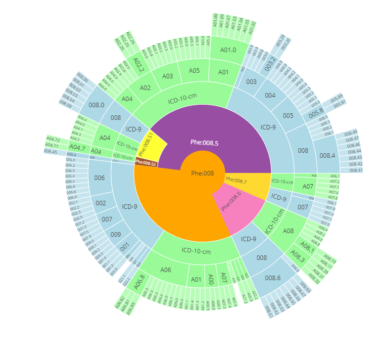

Tutorial on Electronic Health Records Data
1 Introduction
An electronic health record (EHR) is a digital record of a patient’s interactions with a healthcare system. In the last decade, the worldwide adoption of EHRs has skyrocketed. In the United States, the $19 billion Health Information Technology for Economic and Clinical Health (HITECH) Act of 2009 incentivized healthcare institutions to implement EHR systems capable of improving the quality, safety, and efficiency of patient care. As a result, EHR usage in the US has more than quadrupled since 2009. Among their many advantages, EHR systems support comprehensive healthcare documentation, enhanced data security, improved healthcare process management, and integrated medical billing. Additionally, interoperable EHR systems facilitate information exchange and streamlined communication across various healthcare providers involved in a patient’s care.
Beyond their uses at the point of care, EHRs have simultaneously transformed biomedical research. In contrast to data collected from traditional clinical studies such as randomized controlled trials, EHR data is readily accessible and available for large and diverse populations. The data is also collected over long periods of time and contains detailed timestamped information on disease diagnoses, laboratory tests, medical procedures, prescriptions, and clinical notes. The depth and volume of EHR data has in turn created unprecedented opportunities for research, including the development of artificial intelligence (AI) systems for rapid and more inclusive clinical trials recruitment (Liu R 2021), the formation of international research networks focusing on real-time studies of the COVID-19 pandemic(Brat 2020), and the introduction of real-world prediction models for sepsis that can identify the condition prior to symptom onset.
In spite of the exciting and expanding uses of EHR data, there are numerous known challenges that arise in its analysis. Fundamentally, EHR data is not designed for research purposes. It is therefore complex in its structure and prone to quality issues such as missing data, erroneous entries, and duplicate data. A substantial amount of work is required to process and transform EHR data before it can be safely and reliably used for a biomedical application.
In this tutorial, we provide a detailed introduction to the structure of EHR data and the analysis workflow required to prepare “research ready” data. We also include a detailed example workflow with the MIMIC-IV (Medical Information Mart for Intensive Care) intensive care EHR database that is openly available to the research community.
1.1 EHR Data elements and Coding Systems
Some of the major data elements/concepts stored within an EHR system include patient identifiers, demographics, diagnoses, lab test results, scan results, medications and procedures performed. We will be introducing some of these data elements and certain standard coding systems used to represent them.
1.1.1 Disease codes
Disease codes encode diseases, symptoms, and phenotypes into a unique code. ICD (International Classification of Diseases) codes1 and Phecodes2 are examples of disease codes. ICD codes are typically used in a health care setting to code diagnoses made during a patient encounter. However, ICD codes are too detailed to be used for research purposes. Phecodes solves this problem by grouping relevant ICD codes into clinical meaningful phenotypes.
ICD Codes
The International Classification of Diseases (ICD) codes contain codes for diseases, symptoms, findings, and injuries that is maintained by the World Health Organization (WHO). ICD codes are used to record medical findings in a standardized format in EHRs and to track global morbidity and mortality. Different countries and different hospitals may use different versions of ICD codes. WHO periodically releases new versions of ICD codes, among which ICD-9 and ICD-10 are relevant to EHR data. The United States uses an extended version of ICD called the “clinical modification” (CM), e.g. ICD-9-CM. ICD-10-CM has over five times the number of diagnosis codes as ICD-9-CM.
Phecodes
Closely related to the ICD codes, Phecodes are phenotyping codes that group various ICD codes into useful phenotypes. ICD codes are very detailed codes, which can be manually rolled up to phecodes (Wei et al. 2017; Wu et al. 2019). Phecodes version 1.2 condenses roughly 15500 ICD-9-CM codes and 90000 ICD-10-CM codes into 1867 phecodes. ICD codes and phecodes create a certain hierarchy3 from general phenotype to detailed findings. An example of this hierarchy is shown in Figure 1.A complete ICD-Phecode system includes ICD codes, ICD strings, corresponding phecodes and phenotypes, and corresponding excluded phecodes range and phenotype. Table [phecode] shows an example of the ICD-Phecode system.

| ICD-9 | ICD-9 String | Phecode | Phenotype | Excl Phecodes | Excl Phenotypes |
|---|---|---|---|---|---|
| 250 | Diabetes mellitus | 250 | Diabetes mellitus | 249-250.99 | DIABETES |
| 250.1 | Diabetes with ketoacidosis | 250 | Diabetes mellitus | 249-250.99 | DIABETES |
| 250.33 | Diabetes mellitus with other coma... | 250.1 | Type 1 diabetes | 249-250.99 | DIABETES |
| 250.13 | Type I diabetes mellitus [juvenile type]... | 250.11 | Type 1 diabetes with ketoacidosis | 249-250.99 | DIABETES |
1.1.2 Medication codes
Medication codes encode drug products into unique codes and are used to record prescribed/administered medications within EHR systems.. Typical medication coding systems include RxNorm[^index-4] and National Drug Code (NDC)4. Health care systems can also have their own local medication codes. Medication codes [^index-4]: https://www.nlm.nih.gov/research/umls/rxnorm/index.html
RxNorm
RxNorm, produced by The National Library of Medicine (NLM), provides normalized names for clinical drugs and links its names to many of the drug vocabularies commonly used in pharmacy management and drug interaction software, including those of First Databank, Micromedex, and Gold Standard Drug Database. RxNorm provides a set of codes (RxCUI) for clinical drugs, which are the combination of active ingredients, dose form, and strength of a drug. For example, the RxCUI for ciprofloxacin 500 mg 24-hour extended-release tablet (the generic name for Cipro XR 500 mg) is RX10359383, regardless of brand or packaging. RxNorm is also a hierarchical code, with relationships like “has_precise_ingredient”, “has_ingredient”, “has_part”, and “consists_of”.
RxNorm codes can be also browsed through RxNav, which offers a visualized browser for each RxNorm code. Examples of RxNav is shown in Figure 4.
| Concepts, Concept Names, and their sources | RXNCONSO.RRF |
| Attributes | RXNSAT.RRF, RXNSTY.RRF |
| Relationships | RXNREL.RRF |
| Data about RxNorm | RXNDOC.RRF, RXNSAB.RRF, RXNCUI.RRF |
| Archive Data | RXNATOMARCHIVE.RRF |
| Concept Changes Tracking Data | RXNCUICHANGES.RRF |
NDC
The National Drug Code (NDC) is a unique product identifier used in the United States for drugs intended for human use. It’s published by U.S. Food and Drug Administration (FDA). Through NDC, drugs are identified and reported using a unique, three-segment number which serves as the FDA’s identifier for drugs.
The first segment, the labeler code, is 4, 5 or 6 digits long and identifies the labeler such as the drug manufacturer, repackager, or distributer. The second segment, the product code, is 3 or 4 digits long and identifies a specific strength, dosage form, and formulation for a particular firm. The third segment, the package code, is 1 or 2 digits long and identifies package forms and sizes. For example, the product NDC of Ibuprofen produced by Granules India Limited is 62207-0356.
1.1.3 Procedure codes
Procedure codes identify specific surgical, medical, or diagnostic procedures. Typical procedure codes include Current Procedural Terminology (CPT) and ICD-10 Procedure Coding System (ICD-10-PCS). Procedure codes are used in billing, EHR, and insurance.
CPT
The Current Procedural Terminology (CPT) code set is a procedural code set developed by the American Medical Association (AMA). The CPT code set describes medical, surgical, and diagnostic procedures for administrative, financial, and analytical purposes. There are three types of CPT codes. Category 1 are 5-digit codes that cover evaluation and management, anesthesiology, surgery, radiology, pathology and laboratory, and medicine. These are the most widely used CPT codes. Category 2 are clinical laboratory services and category 3 are emerging technologies, services, and procedures. Examples of CPT codes are listed in Table 5.
| CPT | Name |
|---|---|
| 3120F | 12-LEAD ECG PERFORMED |
| 4030F | LONG-TERM OXYGEN THERAPY PRESCRIBED |
| 0575F | HIV RNA CONTROL PLAN OF CARE DOCD |
ICD-10-PCS
The ICD-10 Procedure Coding System (ICD-10-PCS) is an international system of medical classification used for procedural coding. ICD-9-CM contains a procedure classification while ICD-10-CM does not. ICD-10-PCS is the procedure classification for ICD-10. Each ICD-10-PCS code consists of seven alphanumeric characters. The first character is the ‘section’. The second through seventh characters mean different things in each section. Each character can be any of 34 possible values; the ten digits 0-9 and the 24 letters A-H, J-N and P-Z may be used in each character. The letters O and I are excluded to avoid confusion with the numbers 0 and 1. There are no decimals in ICD-10-PCS. Of the 72,081 codes in ICD-10-PCS, 62,022 are in the first section, “Medical and surgical”. Detailed descriptions of the sections can be found in Wiki. For example, 07Q70ZZ is the code for Repair Thorax Lymphatic, Open Approach.
1.1.4 Laboratory codes
Laboratory codes identify medical laboratory observations. Logical Observation Identifier Names and Codes (LOINC) is one of the most widely-used terminology standard for laboratory codes in US.
LOINC
The LOINC database provides a universal code system for reporting laboratory and other clinical observations. The database currently has over 71,000 observation terms. A LOINC term includes 6 parts: component, kind of property, time aspect, system, type of scale, and type of method. An example of a LOINC code is shown in Table 6.
LOINC has a hierarchical structure. It can be represented as a tree, where each leaf is the LOINC term and the parents are LOINC parts whose codes begin with LP. For example, LP14559-6 stands for Bacteria). A visualization of such structure can be browsed in https://loinc.org/tree/.
| Code | Component | Property | Time Aspect | System | Scale | Method |
|---|---|---|---|---|---|---|
| 29463-7 | Body weight | Mass | Pt | ˆ Patient | Qn |
Component indicates what is measured, evaluated, or observed. Property indicates characteristics of what is measured. Time aspect indicates interval of time over which the observation or measurement was made. Pt means point in time. System indicates context or specimen type within which the observation was made, e.g. blood or urine. Scale indicates the scale of measure. Qn means quantitative. Method indicates the procedure used to make the measurement or observation. :::
1.2 Aggregation of codified data
Th four major domains of codified data are diagnosis, procedures, lab measurements, and medications. Due to differential coding practices, the same clinical concepts might be represented by distinct clinical codes at different healthcare systems (Hernandez et al. 2009; Abhyankar, Demner-Fushman, and McDonald 2012). For example, acute myocardial infarction (MI) of anterolateral wall and acute MI of the inferolateral wall are separate codes that describe the same concept of MI (Hong et al. 2021). To reduce ambiguity and alleviate heterogeneity across different healthcare systems, the individual clinical codes are usually rolled to standarized codes that group low level specific codes (Hong et al. 2021; Zhou et al. 2022). As discussed previously, ICD codes are often aggregated into PheCodes using the ICD-to-PheCode mapping from PheWAS catalog (https://phewascatalog.org/phecodes). Procedure codes including CPT-4, HCPCS, ICD-9-PCS, ICD-10-PCS are grouped into clinical classification software (CCS) categories based on the CCS mapping ( https://www.hcup-us.ahrq.gov/toolssoftware/ccs_svcsproc/ccssvcproc.jsp). Medication codes are often aggregated and rolled up into ingredient level RxNorm codes. Laboratory measurements can be aggregated into LOINC codes and further grouped into higher level LOINC Parts codes (LP codes) to reflect broader laboratory code concepts by leveraging the LOINC Multiaxial Hierarchy (McDonald et al. 2004).
1.3 Ontology and Unified Medical Language System (UMLS)
Expert knowledge lies at the core of a medical intelligence system. For example, a doctor would know the proper questions to ask a patient if they want to diagnose a rheumatoid arthritis instead of a simple joint injury. This is also what we expect a medical question answering system would be able to do. A common way to equip machines with knowledge is through a knowledge graph composed of concepts and relations. As the opening part of this tutorial, this section introduces fundamental infrastructures in biomedical informatics, i.e., medical concepts and relations between them, along with the available resources.
1.3.1 Concepts and Relations
For beginners in biomedical informatics, it is important to figure out the meaning of concept and relation. Let’s look at an example in our daily life. One day one of your friend feels ill and goes to see a doctor. They say I have a stomachache! It’s killing me! Then, the doctor tries to comfort them by saying Your stomach pain will be okay. It looks like a minor stomach disorder. In this case, we got three medical terms: stomachache, stomach pain, and stomach disorder. Moreover, we can find some connections between these terms:
The terms stomachache and stomach pain refer to the same syndrome (or concept).
The disease stomach disorder may cause stomachache.
First, it is obvious that stomachache and stomach pain refer to the same concept. Furthermore, with the exception of disease and symptom, every abstract medical entity can be regarded as a concept. They can be procedures, medicine, disorders, mental condition, etc.
Second, there is a relation called may_cause between stomach disorder and stomachache. This enables the doctor to make a diagnosis for your friend according to their symptoms and the relation between symptoms and diseases. Besides, there are a lot of other relations between concepts. For instance, Aspirin could relieve physical pain; Hypertensive disease may cause heart failure. These relations are crucial to biomedical informatics because they can reveal to us how medical concepts interact with each other.
1.3.2 The necessity of a unified coding system
In Section 0.1, we take an example from our daily life to help you understand the meaning of concept and relation. However, biomedical informaticsas an exclusively practical subject, derives its resources from various sources, including but not restricted to textbooks, Wikipedia, and electronic health records (EHR). There are thus great challenges to extracting concepts and relations from the resources, as they not only vary in text style and quality, but also in formats and structures. Therefore, we need a giant dictionary to help us deal with these problems.
In the example from the last section, it is obvious that stomachache and stomach pain refer to a same concept. However, if a researcher is dealing with EHRs from 10,000 patients, finding out all the mentions of the same concept will be arduous work because doctors may use various terms to refer to the same disease in their records such as type 2 diabetes, adult-onset diabetes, and diabetes mellitus type 2. Nonetheless, if you have a dictionary containing all terms under the same concept, you can find all these mentions easily by direct matching.
Moreover, in the last section, we mentioned that doctors can make diagnoses according to relations between symptoms and diseases. Similarly, If we can gather large quantities of relations between medical concepts, it will be a great help to many fields of biomedical informatics such as auto-diagnosis and relation extraction. Therefore, we hope the dictionary also contains the relations between its concepts.
Do we have such a comprehensive dictionary? Of course! In the field of biomedical informatics, we call the giant dictionary a unified coding system.
1.3.3 UMLS: Unified Medical Language System
UMLS (Unified Medical Language System) is a large language system that unifies medical concept coding, typing, relations between medical concepts, etc. It is not only a standard, but also a large database. In brief, the UMLS is a comprehensive dictionary containing considerable medical terms and relations between them.
You can download data and consult the documentation on the UMLS website 5.
1.3.4 Concepts as CUIs in UMLS
It is desirable to have a unique identifier for each concept. In the UMLS, the identifier is called CUI (Unique Concept Identifier). The CUI consists of a C followed by several digits such as C0021400 (Influenza).
As we mentioned in the last section, each concept usually has more than one name or aliases. In the UMLS, we refer to these names or aliases as String. Thus, we can say that each CUI usually has more than one string.
Among all strings under the same concept, there is always a preferred string which is seen as a preferred name of the concept. Researchers usually use preferred names to refer to Concepts because CUIs are difficult to recognize by humans.
All of the CUIs and strings are defined by table MRCONSO in the UMLS which contains 4,536,653 concepts with 16,543,671 strings in total. Table 1 is an example of a concept with its strings.
| Concept (CUI) | Preferred string of concept | All strings of concept |
|---|---|---|
| C0004238 | Atrial Fibrillation | Atrial Fibrillation Atrial Fibrillations Auricular Fibrillation Auricular Fibrillations |
Usually, there are some duplicate strings under the same CUI. Make sure you remove the duplication when constructing your own dictionary.
In addition to CUIs and strings, MRCONSO also provides other information about medical terms, such as language, source vocabularies, types, etc. The MRCONSO is a table of the UMLS, and here 6 is the description of all columns of the table. Here, we only introduce some of them:
CUI: Unique identifier for concept
LAT: Language of the term
STR: String of the term
SUPPRESS: Suppressible flag, indicating whether the entry is obsolete
With the entries in MRCONSO, we can extract all strings under the same CUI easily.
1.3.5 Relations in UMLS
Relations between concepts in the UMLS are defined in another table called MRREL. Each entry of this table provides a relation between a pair of concepts. Let’s look at the example in table 2.
| CUI1 | REL | CUI2 | RELA | SUPPRESS |
|---|---|---|---|---|
| C4707509 | RO | C0004057 | active_ingredient_of | O |
Table 2 presents an entry extracted from the table MRREL (some columns are omitted), which means that C0004057 (Aspirin) is the active ingredient of C4707509 (Aspirin 800mg gastro-resistant oral tablet). However, the attribute SUPPRESS is O, which means that the entry is probably obsolete. Usually, we only use entries with SUPPRESS = N.
The official document 7 provides the description of all of the columns in MRREL. We only introduce some of them here:
CUI1/AUI1: Unique identifier of first concept/atom
CUI2/AUI2: Unique identifier of second concept/atom
REL: Relationship of second concept or atom to first concept or atom
RELA: Additional (more specific) relationship label
SUPPRESS: Suppressible flag, indicating whether the entry is obsolete
The column RELA is more frequently used than REL because RELA provides much more specific information than REL does. REL only has 13 kinds of sketchy relations such as has a narrower relationship and related and possibly synonymous. On the other hand, RELA provides hundreds of relations such as induces, ingredient_of and isa (is a).
1.3.6 Semantic Types in UMLS
In the previous section, We discussed concepts (CUIs) and relations provided by the UMLS. The UMLS also provides categories of these concepts and relations between these categories. These categories are called Semantic Types and the relations are called Semantic Relations. They constitute the Semantic Network of the UMLS. The Semantic Network contains 127 semantic types and 54 relationships. Each concept (CUI) may have more than one semantic type.
| Level 1 | Level 2 | Level 3 |
|---|---|---|
| Experimental Model of Disease | ||
| Physiologic Function | Disease or Syndrome | |
| Biologic Function | ||
| Cell Function | ||
| Pathologic Function | Molecular Function | |
| Organism Function |
Table 3 illustrates the Hierarchy of Semantic Types. The semantic type “Biologic Function” has two children, “Physiologic Function” and “Pathologic Function”, and each of these in turn has several children, too. Each child in the hierarchy is linked to its parent by the “isa” link.
The relations between Semantic Types are also hierarchical. They are grouped into five major categories, which are themselves relations: “physically related to”, “spatially related to”, “temporally related to”, “functionally related to”, and “conceptually related to”.
The website of the UMLS is https://www.nlm.nih.gov/research/umls/index.html↩︎
https://www.ncbi.nlm.nih.gov/books/NBK9685/table/ch03.T.concept_names_and_sources_file_mr/↩︎
https://www.ncbi.nlm.nih.gov/books/NBK9685/table/ch03.T.related_concepts_file_mrrel_rrf/↩︎
https://www.fda.gov/drugs/drug-approvals-and-databases/national-drug-code-directory↩︎
The website of the UMLS is https://www.nlm.nih.gov/research/umls/index.html↩︎
https://www.ncbi.nlm.nih.gov/books/NBK9685/table/ch03.T.concept_names_and_sources_file_mr/↩︎
https://www.ncbi.nlm.nih.gov/books/NBK9685/table/ch03.T.related_concepts_file_mrrel_rrf/↩︎